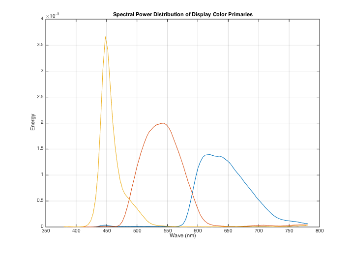
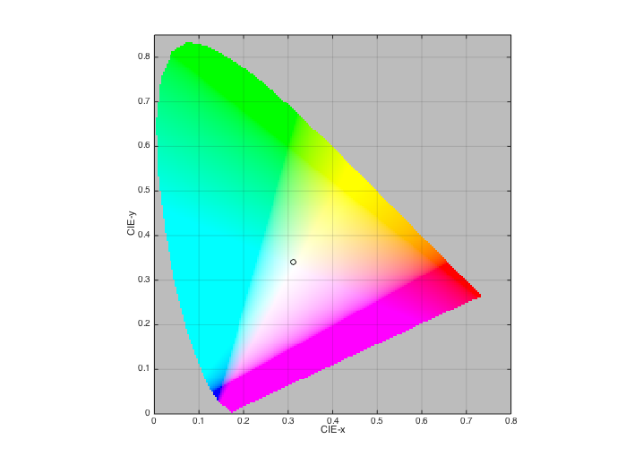
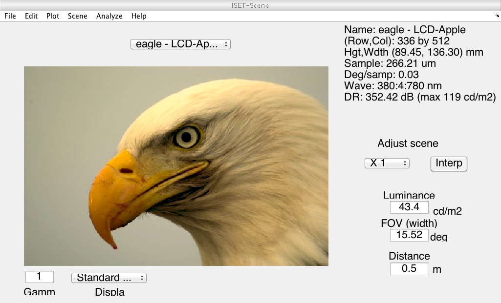

Contents
function varargout = v_sceneFromRGB(varargin) % Test creating a scene from image rgb data using the sceneFromFile % function % % The sceneFromFile logic is this: % % 1) the rgb data and the spectral power distributions (spds) of the % display color primaries are used to calculate the spectral radiance of % the displayed image, and % % 2) the spectral power distribution of the display white point as an % estimate of the scene illuminant. % % Notes about the method % % If we have display calibration data, we can accurately predict the % radiance emitted when an image is rendered on the display. But we % need a scene illuminant to estimate scene reflectances. We use the % spectral power of the display whitepoint (max r, max g, max b) as an % estimate of the scene illuminant. We then calculate reflectances of % surfaces in the scene by dividing the scene radiance by the % illuminant spd. The surface reflectances will not be accurate, but % they will be feasible. And, more importantly, calculating scene % reflectances makes it possible to render the scene under a different % illuminant. % % In this exammple, the scene illuminant is also changed. % % For this example, the gamma function of the display is not used. % % Copyright ImagEval, 2011 varargout = UnitTest.runValidationRun(@ValidationFunction, nargout, varargin); end
Function implementing the isetbio validation code
function ValidationFunction(runTimeParams)%% s_sceneFromRGB
Initialize
ieInit
Load display calibration data
displayCalFile = 'LCD-Apple.mat'; load(displayCalFile,'d'); dsp = d; wave = displayGet(dsp,'wave'); spd = displayGet(dsp,'spd'); if (runTimeParams.generatePlots) vcNewGraphWin; plot(wave,spd); xlabel('Wave (nm)'); ylabel('Energy'); grid on title('Spectral Power Distribution of Display Color Primaries'); end UnitTest.validationData('wave', wave); UnitTest.validationData('spd', spd);
Analyze the display properties: Chromaticity
d = displayCreate(displayCalFile);
whtSPD = displayGet(d,'white spd');
wave = displayGet(d,'wave');
whiteXYZ = ieXYZFromEnergy(whtSPD',wave);
if (runTimeParams.generatePlots)
chromaticityPlot(chromaticity(whiteXYZ));
end
UnitTest.validationData('wave1', wave);
UnitTest.validationData('spd1', spd);
 Read in an rgb file and create calibrated display values
rgbFile = fullfile(isetRootPath,'data','images','rgb','eagle.jpg'); scene = sceneFromFile(rgbFile,'rgb',[],displayCalFile); if (runTimeParams.generatePlots) vcAddAndSelectObject(scene); sceneWindow; end UnitTest.validationData('scene', scene);
[vcReadImage] Assuming 8bit image and 10 bit LUT

Internal validation
We are having cross-platform issues with the horizontal angular extent of the scene varying. So we'll compute it from first principles here.
testByHand.hFovDegreesFromScene = sceneGet(scene,'hfov'); testByHand.displayDPI = displayGet(d,'dpi'); testByHand.displayMetersPerDot = displayGet(d,'meters per dot'); testByHand.distance = sceneGet(scene,'distance'); testByHand.degreesPerDot = displayGet(d,'deg per dot'); testByHand.degreesPerDotCheck = 2*atand(testByHand.displayMetersPerDot/(2*testByHand.distance)); testByHand.hSceneDots = sceneGet(scene,'cols'); testByHand.hFovMeters = testByHand.displayMetersPerDot*testByHand.hSceneDots; testByHand.hFovDegreeesCheck = testByHand.hSceneDots*testByHand.degreesPerDot; tolerance = 1e-12; quantityOfInterest = testByHand.hFovDegreesFromScene-testByHand.hFovDegreeesCheck; UnitTest.assertIsZero(quantityOfInterest,'Hand check of h fov',tolerance); UnitTest.validationData('testByHand', testByHand);
Change the illuminant to 4000 K
bb = blackbody(sceneGet(scene,'wave'),4000,'energy'); scene = sceneAdjustIlluminant(scene,bb); if (runTimeParams.generatePlots) vcAddAndSelectObject(scene); sceneWindow; end UnitTest.validationData('bb', bb); UnitTest.validationData('scene1', scene);
end